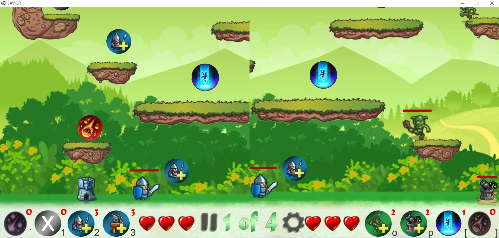
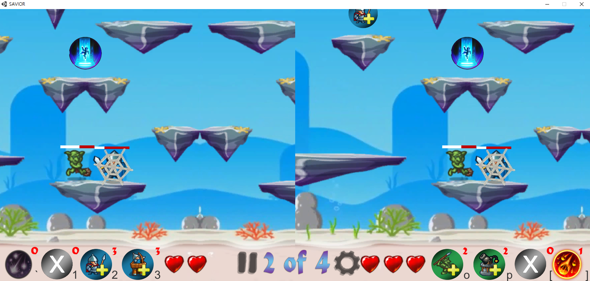
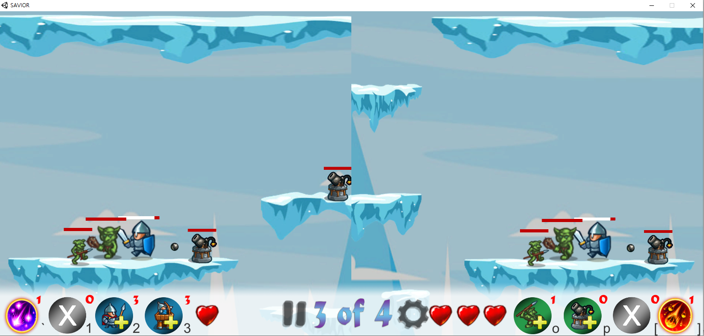
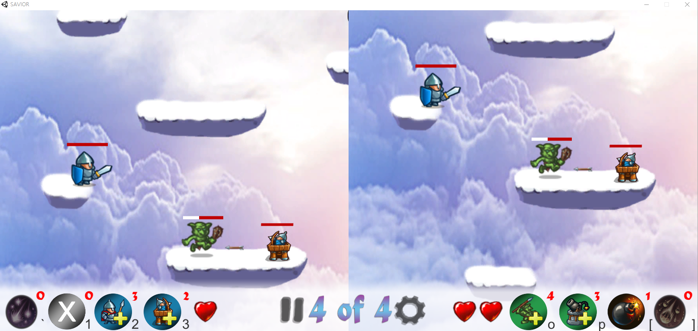

About Me
안녕하세요 하유진입니다.
가상 물체 또는 환경을 시각적으로 보이도록 개발하는 것에 관심이 많아 연구중이며, 이를 현실 세계와 합성 하는 것에 대해 관심이 많습니다.
< 게임 개발 >
학부때부터 게임 개발에 큰 흥미를 느껴 C++, 유니티, 언리얼 엔진을 활용하여 꾸준히 게임 개발 및 기획했습니다. 아래는 개발했던 게임 중 Unity 2D로 제작한 2인 멀티 플레이 게임 'Savior'의 플레이 이미지와 Unity 3D로 제작한 RPG 게임 'Guardians Rulette' 영상입니다. 이 외에도 C++기반 단순 아케이드 게임 'Sen's Missing'뿐만 Unreal Engine을 이용한 3D 드래곤 RPG 게임을 기획 및 개발하였고 현재 Unity 기반 3D 오픈월드 게임인 'DoD:Door of Dimension'을 기획 후 개발 중에 있습니다.




Savior는 2018년에 개발한 2인 멀티 플레이 전략 게임으로 총 4개의 스테이지로 구성되며 각 스테이지 별로 환경을 달리한 특징이 있습니다. 일반적인 필드 맵과 더불어 바다 맵에서는 물 속에서처럼 더딘 움직임을 표현하였고, 겨울 맵에서는 캐릭터 이동시 미끄러짐이 많도록, 하늘 맵에서는 듬성듬성한 구름의 배치를 통해 캐릭터가 떨어질 확률이 높도록 개발하였습니다. 랜덤으로 생성되는 아이템을 전략적으로 활용하여 상대방의 성을 먼저 도달하거나 적절한 위치에 배치한 아군 또는 직접 상대방을 공격하여 HP를 모두 닳게하면 해당 스테이지에서 승리하는 게임입니다.
Guardians Rulette은 마법사 RPG 게임으로 마을에는 펫하우스, 상점, 병원, 수련장, 던전입구가 있습니다. 플레이어는 수련장을 통해 불, 물, 정령 스킬을 수련시킬 수 있으며 상점에서의 아이템 등으로 펫을 길러 함께 대전에 참여하게 되면 펫마다의 특성에 따라 도움을 받을 수 있습니다. 던전에서는 주사위 선택을 통해 보드판을 돌게됩니다. 보드판은 대전칸, 임시 상점칸, 행운칸, 저주칸으로 구성됩니다. 플레이어는 마을에서 회복 및 수련 또는 펫을 성장시켜 힘을 키우며 목표하는 단계만큼의 던전 게임을 모두 통과한다면 최종 칭호 획득에 성공할 수 있습니다.
< 컴퓨터 그래픽스(CG) >
가상현실과 컴퓨터 그래픽스 수업을 통해 Ray Tracing, Ray Casting, 그래픽스 파이프라인에 대해 배우고 구현하며 흥미를 느꼈습니다. 아래는 직접 구현한 Ray Tracer와 거기에 각종 필터를 실시간으로 입히는 프로그램입니다. 속도 향상을 위해 GPU를 이용하여 병렬 프로그래밍한 결과입니다.
3D 지식과 영상처리 지식으로 졸업 작품 '실시간 시선 교정 화상 채팅'에서 시선 교정 알고리즘 개발을 맡아 얼굴 및 눈 인식, 3D 얼굴 모델로의 적용, 곡선을 활용한 교정 계산, 병렬 처리를 통한 속도 개선, 웹을 이용한 실시간 연동 등을 구현하였습니다. 아래의 영상은 졸업작품 수업의 최종 결과입니다. 이를 확장하여 더 많은 활용 기능을 개발한 후 창의적 종합설계 경진대회 등에서 여러 상을 수상하기도 하였습니다.
< VFX >
VFX에 대한 관심으로 VFX TD육성 프로그램을 수료하여 파이썬을 이용한 파이프라인 개발의 이해도와 안목을 높였습니다. 여러 차례의 게임 개발, 그래픽스 수업, VFX TD육성 프로그램(https://github.com/YujinHa/curriculum), 3D Max 특강 등을 통해 전체적인 3D 분야에 대한 이해를 높여왔습니다.
< 모델링 연구 및 툴 개발 >
현재 동국대학교 멀티미디어공학과 그래픽스 응용 연구실에서 그래픽스 이론 및 응용, 기하모델링, 가상/증강현실에 대해 연구하며 모델링 툴을 개발하고 있습니다. 연구실에서 개발중인 c++ 기반 모델링 툴에서는 베지에 곡선 및 곡면, Non-Uniform Rational B-spline 곡선 및 곡면, 메쉬 위의 곡선 계산 및 메쉬 위의 시뮬레이션과 폰트 등 응용 툴을 개발하였습니다.(코드 공개 불가)
< VR, AR, MR >
2019년부터는 (주)비즈아이엔에프에서 인턴으로 다양한 VR, AR, MR 프로젝트에 참여하여 콘텐츠 개발을 함께 진행하고 있습니다.(코드 공개 불가 / 참여 프로젝트: 링크 확인 -> http://www.vizinf.com/home-2/13844-2)
Ability
-
ComputerGraphics, Modeling Programming, VR, AR, MR, XR, Unity, Unreal, Image Processing, Parallel Processing, CUDA, Maya, 3D Max, VFX
Pipeline, Nuke, Photoshop, PremierePro, Illustrator, Indeign, Animate, App Design, Web Design, Video Editing
<Language>
C++, C, C#, Python, HTML/CSS, Javascript
Academic Background
- 세화 여자 고등학교 (2014/03 ~ 2017/02)
- 동국대학교 멀티미디어공학과 학사 (2017/03 ~ 2020/08 : 조기졸업, 학석사연계과정)
- 동국대학교 멀티미디어공학과 석사 (2020/09 ~ 2022/02: 졸업 예정)
- 그래픽스 응용 연구실: http://gaia.dongguk.edu
Career
-
<(주)비즈아이엔에프 - 개발부 인턴 (2019/03 ~ 2021/12(예정))>
- [2019] VR·AR·MR 연동 콘텐츠 제작을 위한 이기종 장비 상호 운용 프레임워크 개발 Depth 카메라인 ZED, KINECT 이용 유니티 게임 콘텐츠 개발 / KINECT 카메라로 마커 인식 후 영상처리 / 집 평면도 이미지 영상처리 및 인식 후 3D 모델 자동 생성 개발
- [2020] 클라우드 기반 5G XR 콘텐츠 프레임워크 고도화 GPS와 AR을 이용하여 유니티 게임 콘텐츠 기획 및 개발 / AR Navigation 개발
- [2020~2021] 실시간 상호작용을 지원하는 몰입형 확장현실 과학문화전시 시스템 개발 VR·AR·MR을 이용한 자동차 경주 콘텐츠 / 베지에 곡면을 이용한 빔프로젝터 와핑 기술 개발을 통해 곡면에 의한 영상 왜곡 해소
Experience
- 동국대학교 페인터즈 벽화봉사 동아리 / 2017 ~ 2018
- Animation 동아리 '빙봉':Adobe Animate 이용 애니메이션 제작 및 스톱 모션 애니메이션 기획 및 제작 / 2018 ~ 2019
- VFX TD 육성 프로그램 수료 - FOUNDRY KOREA: 파이썬을 이용한 TD 기술 학습, Maya, Nuke 등 프로그램 활용 / 2019
- 3D Max 특강 수료: 캐릭터 작업 및 유니티 연동 학습 / 2019
- DirectX12 스터디 / 2019
Awards
- 미소가 아름다운 세상 UCC 공모전 입선 - 동국제약(2017/08)
- 동국대학교 공드 시나리오 공모전 장려상 - 동국대학교 여성메이커사업단(2017/08)
- 대학 생활 가이드 UCC 공모전 수상 - 동국대학교 입학사정관실(2017/12)
- 해커스톡 SNS 영상공모전 인기상 - 해커스톡(2018/05)
- 동국 SW 공모대전 동상 - 동국대학교 융합소프트웨어교육원(2018/11)
- 2019학년도 동국대학교 프로그래밍 경진대회 장려상 - 동국대학교 융합소프트웨어교육원(2019/06)
- 2020 동국대학교 캡스톤디자인 밸류업 프로그램 최우수상 - 동국대학교 산학협력선도대학 육성사업단(2020/09)
- 2020 선도 창의적 종합설계 경진대회 동상 - 서울과기대 공학교육혁신센터(2020/11)
- 2020 E FESTA 공학패스티벌 2020 창의적 종합설계 경진대회 한국테크노파크진흥회장상 - 산업통상자원부(2020/11)
Retained Certificate
- Adobe Certified Associate Premiere Pro
- GTQ Photoshop 1급
- 컴퓨터 그래픽스운용기능사
- 컴퓨터 활용능력 1급
- 정보처리기사
My Interest & Enjoy
- Video Editting
- Goods Design & Craft
- K-POP
- Movies & Drama
- Modern Dance
- Travel
- Cook
- Self Nail Art